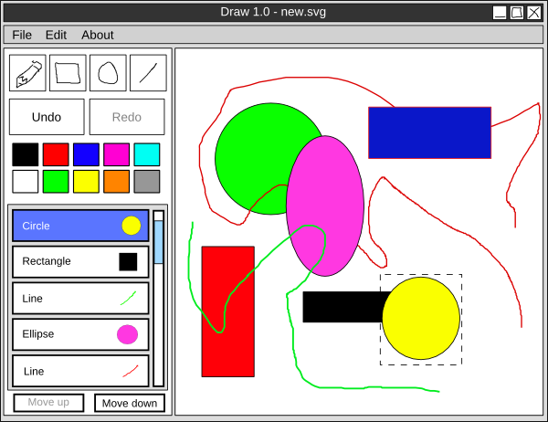

Yleissuunnitelma
Piirustusohjelma Draw
Alex Lagerstedt | 69482W | EST 3.vsk | 22.2.2010
Yleiskuvaus
Draw on yksinkertainen graafinen, hiirellä käytettävä piirustusohjelma.
Ohjelman ominaisuuksia ovat:
- Uusien kuvien luominen
- Editoitavan kuvan tallennus ja tallennettujen kuvien avaaminen
- Värien valinta
- Hiirellä piirrettäviä perusmuotoja ainankin
- Vapaamuotoinen viiva
- Ympyrä
- Ellipsi
- Suorakulmio
- Undo ja redo-ominaisuus
- Mahdollisuus valita aikasemmin tehtyjä muotoja ja muuttaa niiden ominaisuuksia
- Kuvassa esiintyvien muotojen näkyminen listassa ja niiden järjestyksen (päällekkäisyyden) muuttaminen
- Muotojen liittäminen erilaisiksi ryhmiksi. (Layerit)
- Tuki kirjoitetulle tekstille
Toteutus tulee olemaan vaativan vaikeustason mukainen.
Ohjelma tulee olemaan vektorigrafiikkaohjelman tapainen ja se käsittelee eri muotoja erillisinä objekteina jotka pinotaan kaksiulotteiseksi kuvaksi. Vapaasti hiirellä piirrettävät viivat muodostuvat useasta lyhyestä suorasta pätkästä joten esim. Bézier-käyriä ei toteuteta.
Käyttöliittymän luonnos
Draw tulee olemaan kokonaan käytettävissä hiirellä. Yleisimmille komennoille (undo, redo, yms.) toteutetaan myös näppäimistöoikotiet. Alla on karkea kuva ohjelman käyttöliittymästä.

Normaalien valikoiden lisäksi ikkuna jakautuu kahteen osaan. Oikealla puolella näkyy editoitava kuva ja vasemmalla editointityökalut, värit ja kuvan komponentit. Valitun kuvan väriä voi vaihtaa väripainikkeista. Kuvien piirtojärjestystä voi vaihtaa listan alta löytyvillä nosto- ja laskupainikkeilla.
Tiedostot ja tiedostoformaatit
Ohjelma tulee käyttämään tallennukseen ja lataamiseen avointa vektorikuvien tallentamiseen sunniteltua XML-pohjaista SVG-formaattia. Vain Draw:n tukemat muodot ovat tuettu kuvien latauksessa joten varsin pieni osa standardista on toteutettu. Todennäikösesti Draw ei saa paljoakaan järkevää tietoa ulos muilla kehittyneemmillä ohjelmilla tallennetuista SVG-tiedostoista mutta sen ei tulisi kaatua niitäkään lukiessa.
Esimerkiksi suorakulmio voi olla tiedostossa kuvattu
muodossa:
<rect x="1" y="100" width="1198" height="398"
fill="none" stroke="blue" stroke-width="2"/>
Järjestelmätestaussuunnitelma
Draw:n toteutuksesta sen graafinen käyttöliittymä tulee olemaan suuri osa. Sen testaus ohjelmallisesti on kuitenkin hankalaa. Käyttöliittymään liittyvät virheet pyritään löytämään käyttämällä ohjelmaa monipuolisesti ja erilaisissa tilanteissa.
Tiedostojen tallennuksessa ja varsinki lataamisessa yksikkötestaus tulee hyödylliseksi. Ohjelma ei saa kaatua virheellisillä SVG-tiedostoilla ja mikäli ne sisältävät komponentteja jota ohjelma ei tue, ne osat jätetään lukematta ja piirtämättä. Ohjelma voi tulostaa varoituksia (muoto kuva-alueen ulkopuolella, yms.) sekä muuta debuggaustietoa stdout-virtaan.